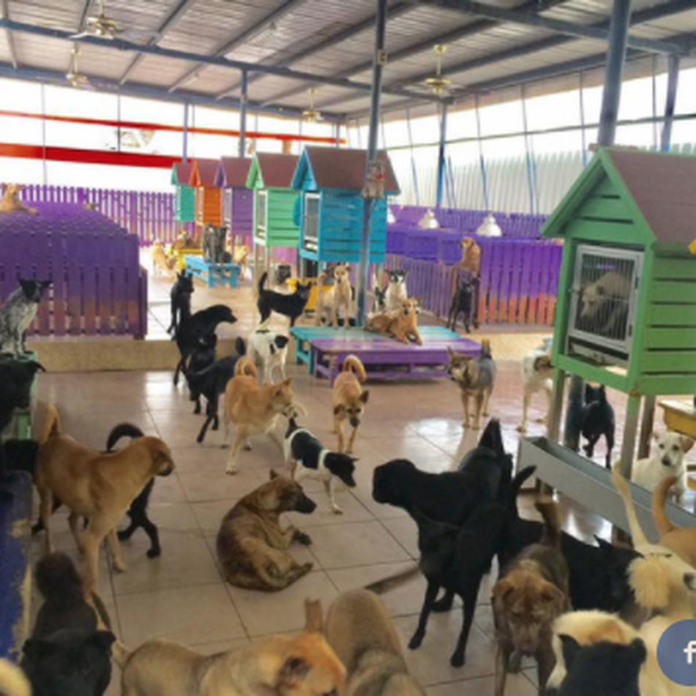

Sobre nosotros

Somos una organización sin fines de lucro. Rescatamos y damos amparo a perros y gatos que necesitan tener un lugar con una familia que les puedan dar afecto en sus vidas. Si eres una de las personas que aman a los animales, entenderas la lucha de poder mantener el refugio que se contruyó en base a aquellos sin voz que no pueden pedir ayuda por si mismos.
